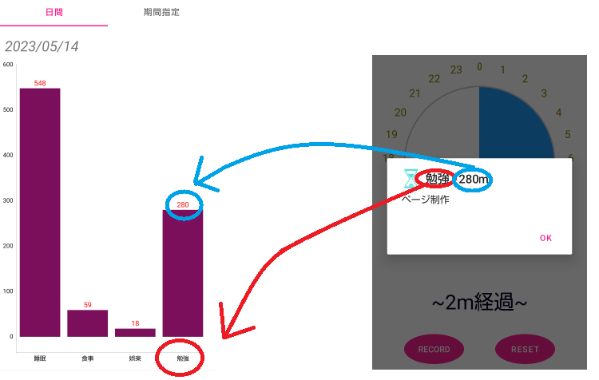

My First Post
初めに
このページは私が初めて開発したAndroidアプリについて紹介するものです。どうぞよろしくお願いいたします。

上記の画像は私が作成したAndroidアプリを起動時に表示される画面の写真です。画像下のナビゲーションシステムを見てわかるようにこのアプリの機能は"Home","Stat","Record"の 3つになっており、起動時に"Home"画面が表示されるようにしています。
Home画面
Home画面の全体像は下の画像のようになります。Home画面は人が一日に何をしていたかを表す日記のようなものです。まずHome画面のオブジェクトが何を表しているのか説明します。

画面の中央にある円とその外側に数字が描かれたオブジェクトは時計を表しています。普通の時計は一周で12時間を記録しますが、画像のようにこのアプリは一周で24時間 を表現するようにしております。

円の中心から描かれている黒い直線は時計の針を表しています。上の画像の場合だと現在時刻は15時程度だと読み取ることができます。

また画像のように色の付いている部分から、黒の直線までの色のない領域は最後に記録してからの経過時間を表しています。この画像だと経過時間は赤い円弧の領域が終わる約10:30から 現在時刻の15時までであり、その間の時間は4時間30分,つまり270分程度です。実際に画像下部の文字列は"~278m経過~"となっておりより正確な経過時間を描画しています。
次に色の付いた画像が何を表しているか見てみましょう。下の画像は青色の円弧をタッチしたときに表示されるメッセージです。
この画像から青い円弧の期間は"睡眠"をしていたことがわかり、その時間は"548分"だとわかります。実際に青色の円弧は0時から9時程度の範囲でその間の時間は540分であり、表示 されたメッセージの値とほぼ等しいことがわかります。このようにして色の付いた領域をタッチすると、その時間何をしていたのかを確認することができます。では画面の"Record" と書かれたボタンをタッチして新しく記録してみましょう。ボタンをタッチすると次のような画面に飛びます。

この画面では"color","title","detail"を記録することができます。"color"は先程の時計に表示される円弧の色、"title"は記録するデータのタイトル名、青色の円弧だと "睡眠"になります。"detail"はメモのようなものであり青色の円弧だと"起床"の部分になります。まず"COLOR"と書かれたボタンを押して円弧の色を選びます。ボタンを押すと 下の画像のようなダイアログが表示され色を選ぶことができます。初期値で"RED"になっていますが、今回は"GREEN"を選びます。

続いて"title"に"勉強"、"detail"に"ページ制作"と入力すると以下の画像のようになります。

この状態で画面下部の"SAVE"と書かれたボタンを押すと入力したものが記録されます。それでは"SAVE"を押してみましょう。
"SAVE"を押すと自動的に時計が表示されているHome画面に戻ります。上の画像から記録前の画面と比べると緑色の円弧が新しく描画されていることがわかります。また 画面下部の文字列も"~2m経過~"と更新されていることがわかります。それでは先程入力したデータが正しく記録されているか見てみましょう。新しく描画された緑色の 円弧をタッチすると次のようなダイアログが表示されます。
この画像から確かに先程入力したタイトルの"勉強"、メモの"ページ制作"が表示されており、円弧の色は緑色であり"GREEN"を選択できたことがわかります。以上の事から先程入力した データが正しく記録され、反映されているといえます。
このようにしてHome画面では自分がその時間に何をしていたか記録することができ、日記のようなものとして使うことができます。
Stat画面
Stat画面の全体像は下の画像のようになります。Stat画面はHome画面で記録したデータを棒グラフにして表すものです。画像のように棒グラフの種類は"日間"と"期間指定"の 2つを選ぶことができます。"日間"は当日記録したデータを棒グラフに表したもの、"期間指定"は自分で期間を指定してその期間のデータを集計したものが棒グラフに表されます。 また棒グラフの描画は"MPAndroidChart"を使用しました。
Stat_日間
まずは日間から解説します。日間は当日Home画面で記録したデータを棒グラフで表しています。下の画像はHome画面に記録してあるデータが棒グラウに反映されていることを表しています。 今回は先程記録したデータ"勉強"を例にしています。グラフの横軸は記録したデータのタイトル名、縦軸はそのデータの時間を表しています。実際にタイトル名"勉強"が横軸に、その実施 時間"280m"つまり280分が縦軸に反映されていることがわかります。今回の記録したデータではありませんでしたが、タイトル名が同じ場合、例えばHome画面でタイトル名"勉強"のデータが2つ 以上ある場合、実施時間は加算されるようになっています。
Stat_期間指定
次に期間指定について解説します。下の画像は期間指定の画面であり、初期値で当日の日付が期間指定されています。
使い方は"期間選択"ボタンを押すと期間を指定することができ、"決定"ボタンを押すと棒グラフが表示されます。実際に初期値である当日の日付、この場合だと"2023/05/14~2023/05/14" と入力された状態で"決定"ボタンを押すと以下のようになります。先程の日間の棒グラフと比べると同じグラフになっていることが確認できます。
次に自分で期間指定をしていきます。まず"期間選択"ボタンを押すと日付を選択するダイアログが表示されます。今回は"2023/05/10~2023/05/17"の期間を入力します。 入力が終わったら"決定"ボタンを押して棒グラフを更新します。具体的な流れは下の画像のようになります。
また次のように"2023/05/13~2023/05/01"というようなエラーがでる期間を入力した状態で決定ボタンを押すと"入力に誤りがあります"と表示されるようにしています。
以上のようにstat画面では自分が指定した期間で、記録したデータを棒グラフに表してみることができます。
Record画面
最後にRecord画面について説明します。